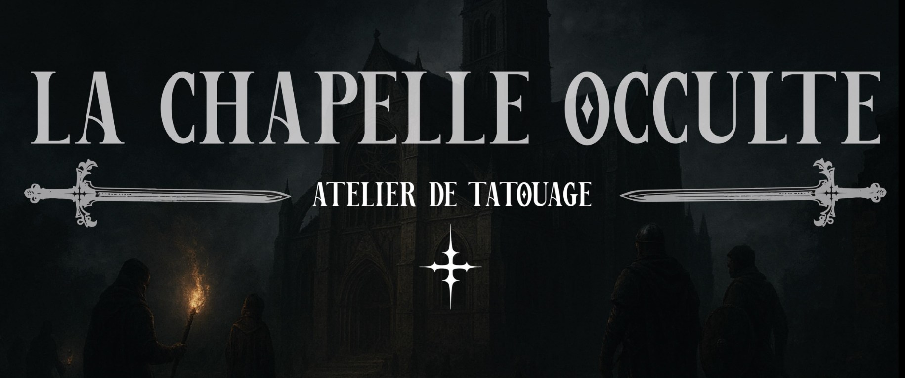

01
Le Demon’skin fait peau neuve
Quatre années dans leur précédent shop ont affiné deux styles, deux obsessions et quelques passions communes. Fin 2025, le décor change : nouveau lieu, nouvelle direction artistique, et surtout un nouveau nom. La Chapelle Occulte ouvre ses portes — le début d’un nouveau souffle pour 2026.
